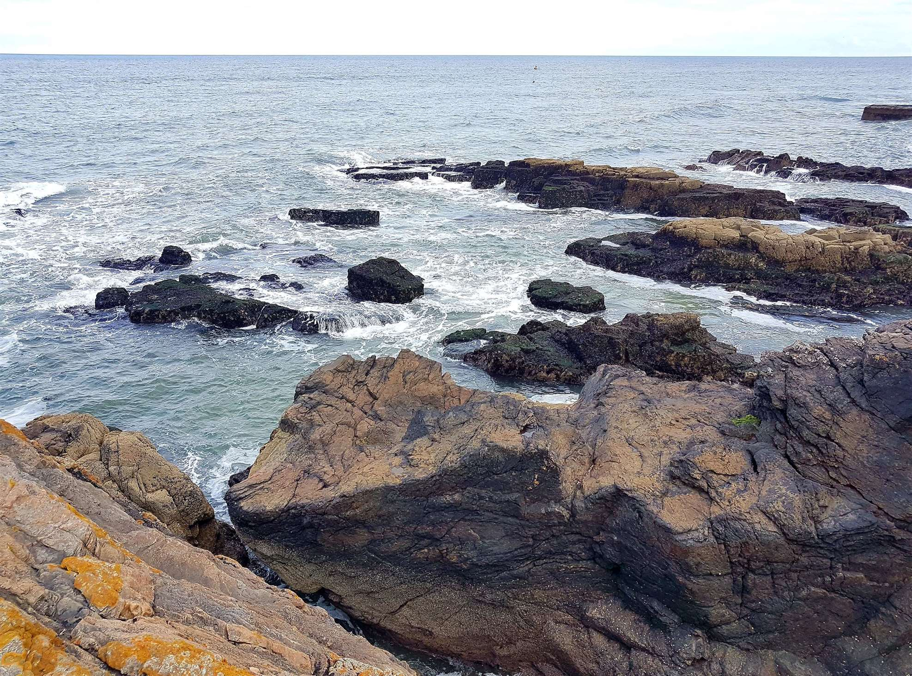

Trips
Back to Map
Aberdeen Beach Summer

Renowned for receiving the Resort Seaside Award in 2013, Aberdeen Beach can be found by visitors a short distance from Aberdeen city centre.
Aberdeen Beach has been recognised for its popular recreational and sports area and attracts many visitors throughout the year. You can access the Beach Leisure Centre, Linx Ice Area, a range of cafes, restaurants and a family fun fair. There is also a cinema, retail park and a fitness gym. (source: VisitScotland.com)
Click here for more photos